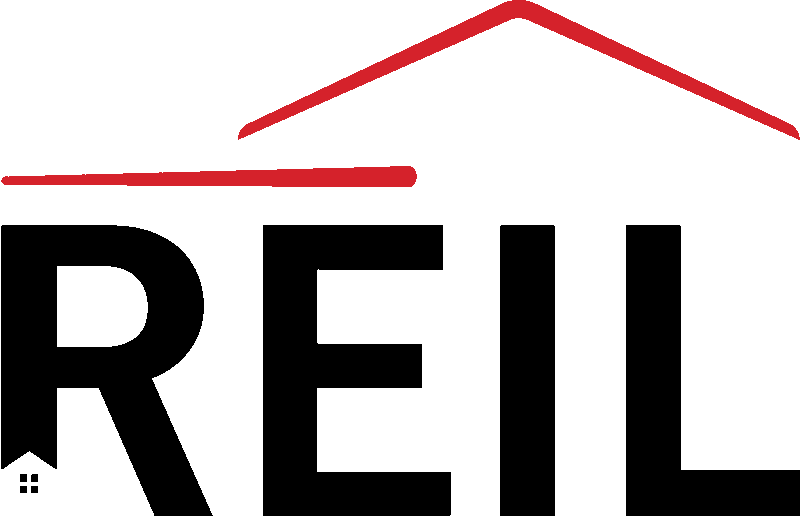

<link rel="import" href="../shared-styles/page-shared-styles.html">
<dom-module id="ll-home">
  <template>
    <style include="page-shared-styles"></style>
    <style is="custom-style">
      :host {

      }

      div.container{
        width: 75vw;
        height: 75vh;
        margin: 5vh 0;
        margin-left: 12.5vw;
      }

      l2t-paper-slider.custom{
        --paper-slide-height: 75vh;
        --paper-slide-dot: var(--ll-light-border);
        --paper-slide-dot-selected: var(--ll-light-blue);
      }

      paper-slide.slide{
        text-align: center;
      }

      div.quote{
        font-family: IBMLight;
        width: 100%;
        white-space: normal;
        font-size: 1.25em;
        text-align: left;
      }

      span.quotation{
        font-family: IBMBoldItalic;
      }

      div.author{
        font-family: IBMBold;
        width: 100%;
        white-space: normal;
        font-size: 1em;
        margin-top: 2.5vh;
      }

      a.companylink{
        text-decoration: none;
        color: var(--ll-light-blue);
      }

      img.companyimg{
        height: 20vh;
        margin-top: 5vh;
        max-width: 25vw;
      }

      img.noheight{
        height: auto;
      }

      /*Responsive Styles*/
      @media screen and (max-width : 760px){
        l2t-paper-slider.custom{
          --paper-slide-height: 75vh;
          --paper-slide-dot: transparent;
          --paper-slide-dot-selected: transparent;
        }
        img.companyimg{
          max-width: none;
        }

        img.noheight{
          height: auto;
          max-width: 50vw;
        }

        div.quote{
          font-size: 1em;
        }

        div.author{
          font-size: .85em;
        }
      }
    </style>

    <div class="container">

      <l2t-paper-slider auto-progress slide-duration="15" class="custom" total-slides="3">
        
        <paper-slide class="slide">
          <div class="quote">
            <span class="quotation">"</span>
            I was thrilled to have been introduced to Lexi Levy at L Squared Social when I inquired with a friend about needing assistance with social media. When I met with Lexi, I explained how in the past I was trying to reach potential donors, share our foundation's mission, and upcoming events through social media, but I kept falling short! Immediately Lexi understood my needs and set up my Instagram, Twitter, and LinkedIn pages as well as organized my foundation's Facebook page. She wrote and published original content across all of the social media platforms and I began to see instant results! Lexi guided me through the entire process and together we made an impact!
            <span class="quotation">"</span>
          </div>
          <div class="author">
            Terrie Magro (Co-Founder, <a class="companylink" href="www.michaelmagrofoundation.com">The Michael Magro Foundation</a>)
          </div>
          
        </paper-slide>

        <paper-slide class="slide">
          <div class="quote">
            <span class="quotation">"</span>
            I was thrilled to have been introduced to Lexi Levy at L Squared Social when I inquired with a friend about needing assistance with social media. When I met with Lexi, I explained how in the past I was trying to reach potential donors, share our foundation's mission, and upcoming events through social media, but I kept falling short! Immediately Lexi understood my needs and set up my Instagram, Twitter, and LinkedIn pages as well as organized my foundation's Facebook page. She wrote and published original content across all of the social media platforms and I began to see instant results! Lexi guided me through the entire process and together we made an impact!
            <span class="quotation">"</span>
          </div>
          <div class="author">
            Evan Samlin (Director of Operations, <a class="companylink" href="www.reilcap.com">REIL Capital</a>)
          </div>
          
        </paper-slide>

         <paper-slide class="slide">
          <div class="quote">
            <span class="quotation">"</span>
            Working with L Squared Social for the past year has been an incredible experience for both me and my entire team! Not only does Lexi have an in-depth understanding of the social media landscape, but she brings creative ideas and impressive strategies to the table, while maintaining a friendly and motivating presence. Companion would not be where it is today without L Squared Social!
            <span class="quotation">"</span>
          </div>
          <div class="author">
            Lexie Ernst (Co-Founder, <a class="companylink" href="https://companionapp.io/">Companion</a>)
          </div>
          
        </paper-slide>
      </l2t-paper-slider>
    </div>

    <ll-footer
    name="ll-footer">
    </ll-footer>

  </template>

  <script>
    class LlHome extends Polymer.Element {
      
      static get is() { return 'll-home'; }
      
      static get properties() {
        return {
          title: {
            type: String
          },

        };
      }

      ready(){    
        var self = this;  
        
        super.ready();

        this._addSubscribers();

      }

      connectedCallback(){
        super.connectedCallback();
        console.log(this.getAttribute("name") + " connected");
      }

      _addSubscribers(){
        var self = this;
        // $.subscribe("setLoadingText", function(event, data) {
        //     self.loadingText = data;
        // });

      }

      
     
    }


    window.customElements.define(LlHome.is, LlHome);
  </script>
</dom-module>
